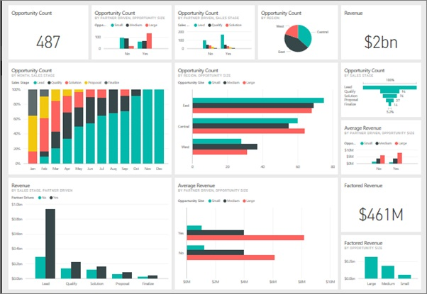
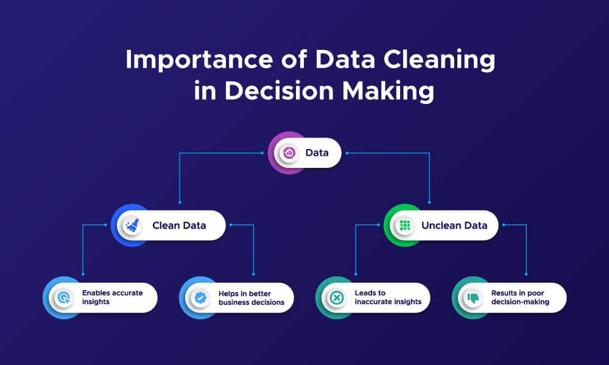
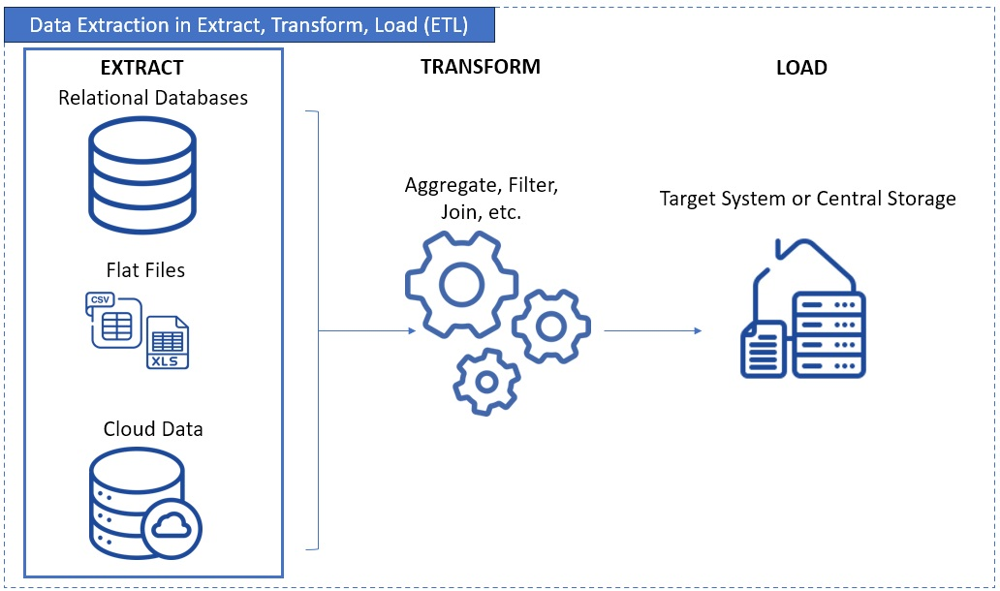

Data & Systems Analyst
Transforming complex, raw datasets into structured, actionable insights. Specializing in business intelligence, robust ETL pipelines, and executive dashboards that drive operational efficiency.
DAX, Data Modeling, Dashboard Dev
Data Visualization, Reporting, Blending

Execution: Designed and built an interactive dashboard combining operational and sales datasets using advanced data blending techniques and calculated fields to track KPIs.
Business Impact: Enabled leadership to actively monitor critical trends and metrics, driving data-informed business decisions and highlighting areas for operational improvement.

Execution: Scripted and deployed automated data cleaning and transformation pipelines utilizing Python's Pandas library to process and standardize raw, unstructured datasets.
Business Impact: Significantly improved overall data quality and downstream reporting accuracy while eliminating hours of manual data preparation tasks for the analytics team.

Execution: Developed robust SQL queries utilizing complex joins and aggregations for massive data extraction, transformation, and structuring directly from relational databases.
Business Impact: Streamlined the data retrieval process, enabling highly efficient data analysis and ensuring 99% data accuracy across interconnected enterprise systems.
Execution: Authored comprehensive Business Requirement Documents (BRD) and Functional Requirement Documents (FRD). Created detailed process maps to evaluate current vs. future state systems.
Business Impact: Bridged the gap between business needs and technical execution, ensuring smooth User Acceptance Testing (UAT) and high-quality, defect-free system deployments.
Wireless+ | Toronto, ON
Orion Stars | Houston, TX
Seneca Polytechnic | North York, ON